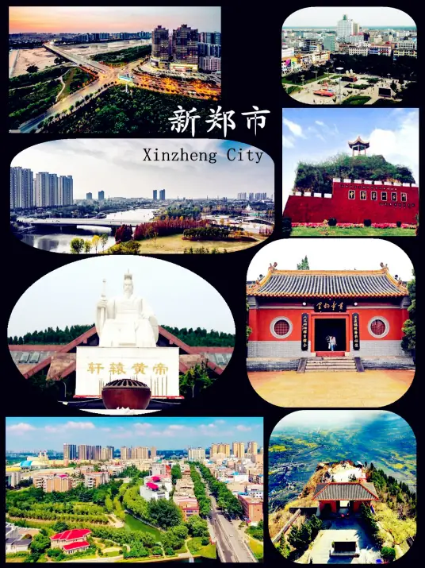

| 约8000年前裴李岗文化时期，新郑地区进入以原始农业为主的氏族社会，是中国古代文明最早的发源地之一。 |  |
|---|---|
| 约5000年前仰韶文化中晚期，新郑为有熊国，是黄帝族时代，为中国古代文明形成的核心地带。 | |
| 约4700年前龙山文化中期，新郑为祝融氏之国。 | |
| 夏商时期，新郑为夏都、商都京畿。 | |
| 西周，新郑为郐国。 | |
| 春秋时期，新郑为郑国。 | |
| 战国时期，为韩国。秦王政十七年（前230年），秦国灭韩国，设新郑、苑陵二县，属颍川郡。 | |
| 秦朝，新郑沿用秦国建置。 | |
| 汉朝，新郑承袭秦朝建置，属河南郡，新郑区域分为新郑、苑陵和左亭三县。 | |
| 民国二年（1913年），废州，新郑县划归豫东道管辖。 | |
| 民国十六年（1927年），废道，新郑县隶属于第一行政督察区。 | |
| 1994年5月，经国务院批准撤县设市，为新郑市，属河南省，由郑州市代管。 |